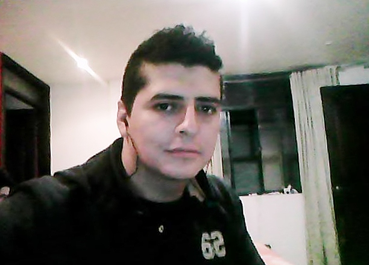

<
cv de Fabio Solarte
1 año de experiencia desarrollando aplicaciones y paginas web.
Educacion
- Contador publico y desarrollo web.
- Politecnico Grancolombiano.
- TOEFL
- 640/677 score.

Experiencias Profesionales:
- Fundador de polifonica.co
- 15 años trabajando con bandas de rock y generos alternativos.
- Instrumentacion musical.
- Desde el año 2000.
Otras Actividades:
- Musico productor profesional.
- 15 años trabajando con bandas de Rock y generos alternativos.
- Instrumentacion musical.
- Generos alternativos.
Informacion adicional:
- Diplomado en marketing digital 2018.
- Diplomado en protools y software musical.
- 5 semestre de administracion de empresas.
Redes sociales y paginas web: